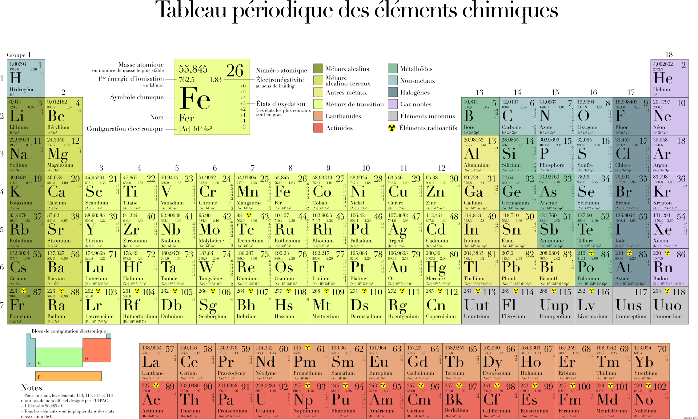

원자번호는 그 원자가 가진 ‘양성자(proton)’의 수를 뜻한다. 예를 들어 수소는 원자번호 1번으로 양성자가 단 하나뿐인 가장 단순한 원자다. 반면 우라늄은 원자번호 92번으로 무려 92개의 양성자를 품고 있다. 이것이 자연 상태에서 존재할 수 있는 원소 중 가장 무거운 부류에 속한다는 뜻이다.
그런데 양성자는 모두 ‘+’ 전하를 띠기 때문에, 서로 강하게 밀어내려는 힘이 작용한다. 이대로라면 원자핵은 순식간에 흩어져 버려야 하지만, 그 붕괴를 막는 강력한 힘이 하나 있다. 바로 ‘강한 핵력(Strong Nuclear Force)’이다.
‘강한 핵력’은 자연에 존재하는 ‘강한 핵력’, ‘약한 핵력’, ‘전자기력’ ‘중력’ 네 가지 기본 힘 중 하나로, 전자기력이나 중력보다 훨씬 강력하다. 참고로 힘의 세기는, 강한 핵력 > 전자기력 > 약한 핵력 > 중력 순이다.
이 힘은 오직 원자핵 내부의 극히 짧은 거리에서만 작용하지만, 그 안에서는 모든 반발력을 압도한다. 양성자와 중성자를 서로 단단히 결합시켜, 우리가 알고 있는 ‘물질’을 존재하게 만드는 근본적 힘이다.
이 힘의 위력은 우리 일상에서도 간접적으로 확인된다.
돌을 바닥에 세게 던진다고 해서 그 속의 원자가 부서지지 않는 이유가 바로 여기에 있다. 강한 핵력이 결합을 단단히 붙잡고 있기 때문에, 보통의 충격으로는 원자핵이 분열되지 않는다. 핵분열이 일어나려면, 이 결속력을 깨뜨릴 정도의 막대한 에너지가 필요하다.
하지만 우라늄처럼 양성자가 92개나 되는 원자는 예외적으로 불안정하다. 양성자 수가 많아질수록 서로 미는 전기적 반발력이 커지기 때문에, 강한 핵력만으로는 완전히 제어하기 어렵다. 그래서 우라늄은 시간이 지나면 자연스럽게 원자핵이 갈라지는 방사성 붕괴를 일으킨다.
이 과정에서 막대한 에너지가 방출되며, 그 에너지가 바로 핵발전과 핵무기의 원리이기도 하다.
만약 강한 핵력이 존재하지 않았다면, 세상에는 어떤 원자도 안정적으로 존재할 수 없었을 것이다. 물질은 전부 미세한 입자 단위로 흩어져 버리고, 인간의 몸도 형체를 유지하지 못했을 것이다. 우리의 뼈와 세포, 공기와 물, 별과 행성에 이르기까지 모든 것은 강한 핵력이라는 보이지 않는 결속 덕분에 유지되고 있다.
강한 핵력은 존재의 실을 엮는 힘이며, 우주가 형태를 가질 수 있도록 허락한 근본적인 질서다.